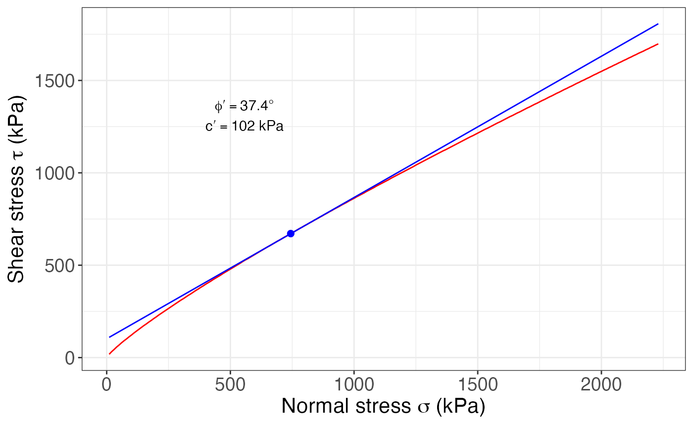

Calculates the Barton-Choubey criterion for the given data and for the given level of stress (unit weight and depth), and an option for plotting it.
Arguments
- JRC
The Joint Roughness Coefficient (1-20)
- JCS
The Joint Compressive Strength in MPa
- phi.r
The residual friction angle of the rock
- unit.weight
The unit weight of the rock in kN/m3
- depth
The depth, in meters, to which calculate the parameters
- BC
The result from running
Barton_Choubey()- units
The units to use in the plot, either "kPa" or "MPa". Default is "kPa". If "MPa" is desired you can use units = "" or units = "MPa"
Value
For Barton_Choubey(): a list with 3 tibbles: data (normal stress and shear stress), stress level point, and parameters (c and phi). All stress values are in MPa
For Barton_Choubey_plot(): a ggplot object for the Barton-Choubey criterion
References
Barton, N. & Choubey, V. (1977). The shear strength of rock joints in theory and practice. Rock Mechanichs, 10: 1-54.
See also
Other rock mechanics:
Hoek_Brown(),
UCS()
Examples
JRC = 10
JCS = 30
phi.r = 26
unit.weight = 18.6
depth = 40
BC = Barton_Choubey(JRC, JCS, phi.r, unit.weight, depth)
BC
#> $dat
#> # A tibble: 223 × 2
#> sig_n tau
#> <dbl> <dbl>
#> 1 0.01 0.018
#> 2 0.02 0.032
#> 3 0.03 0.044
#> 4 0.04 0.057
#> 5 0.05 0.068
#> 6 0.06 0.08
#> 7 0.07 0.091
#> 8 0.08 0.101
#> 9 0.09 0.112
#> 10 0.1 0.122
#> # ℹ 213 more rows
#>
#> $stress.level
#> # A tibble: 1 × 2
#> x y
#> <dbl> <dbl>
#> 1 0.744 0.671
#>
#> $parameters
#> # A tibble: 1 × 2
#> c phi
#> <dbl> <dbl>
#> 1 0.102 37.4
#>
Barton_Choubey_plot(BC)
